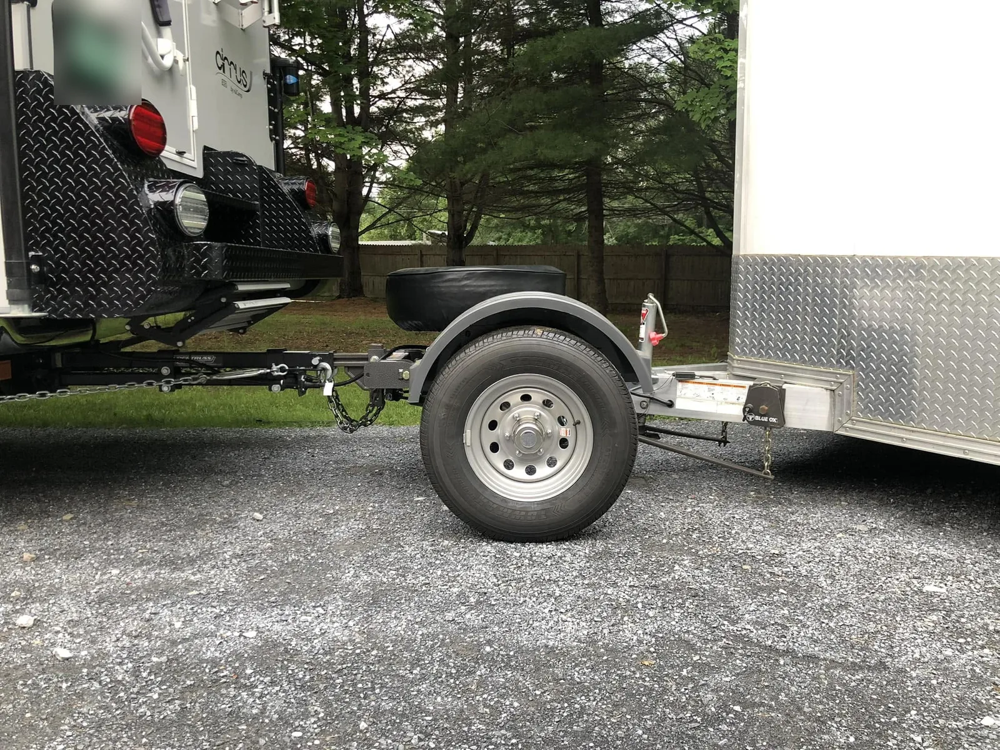
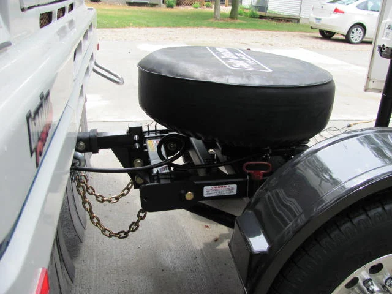

Carries the tongue weight
The trailer’s tongue sits on the Toad’s axle, so the tow vehicle carries zero tongue weight.
The Trailer Toad is a patented auxiliary axle, or dolly, for tag-style trailers. It rides between your tow vehicle and your trailer and takes the trailer’s tongue weight off your hitch completely.

Your tow vehicle pulls. The Toad holds up the front of the trailer. Four things make that work.
The trailer’s tongue sits on the Toad’s axle, so the tow vehicle carries zero tongue weight.
With no tongue weight on the hitch, your tow vehicle rides level. Brakes and ABS work as designed, and the trailer sways less.
A single ball on the back of the Toad. Your trailer couples to it the same way it couples to a truck.
The steerable axle follows your tow vehicle through every turn. To back up, drop the two reverse pins and it locks straight.

Both models are now built on the same redesigned chassis, developed with Duratek Axle. The axle is the difference.
$4,495Factory direct · plus freight
For trailers up to 12,000 lb: campers, car haulers, horse and utility trailers.
$5,295Factory direct · plus freight
The best choice for stacker trailers and commercial hauling.
Bought a bigger trailer? With the new chassis you don’t buy a new Toad. Swap the axle and your 3500HD becomes a 5000SD.
Call about upgradingWithout a Toad, tongue weight and every road impact go straight into the back of your tow vehicle. That’s hard on frames, hitches and rear suspension, and you feel it at every bridge end. With the Toad carrying that load, the ride gets smoother for the vehicle and for you.
Don’t see your question? Call us. The owner answers the phone.
None. The trailer couples to the ball on the rear of the Toad, and the Toad’s own axle carries that weight. Your tow vehicle carries zero tongue weight.
Lower the two red-handled reverse pins into the receiver tube on the axle. That locks the axle straight so the Toad backs up like a trailer and protects the axle. Pins up to go, down to back up.
The 3500HD carries up to 1,200 lb of tongue weight, for trailers up to 12,000 lb. The 5000SD carries up to 3,000 lb of tongue weight with a gross trailer weight up to 24,000 lb, and is the best choice for stacker trailers and commercial hauling.
Yes, absolutely. The hitch’s L-shaped shank goes in your receiver and bolts to the Toad’s front swivel, and the hitch head and ball go on the rear of the Toad, where your trailer couples. You can use the one you have, or buy one from us and we’ll match it to your rig.
Maybe. The Toad works with a properly braced 2″ or 2.5″ receiver. If your hitch is rated at 10,000 lb it is probably braced enough; anything under that, consider bracing the receiver tube to stop it rocking front to rear.
Motorhomes from Class C to diesel pushers, pickups, truck campers and SUVs. With a truck camper, no tongue weight goes to your hitch extension.
Very little. The Toad arrives as a complete assembly on a pallet. You attach the fenders and set up your weight distribution hitch, which usually takes 90 minutes to 2 hours. Setup videos are on the Trailer Toad Garage YouTube channel.
No. The Trailer Toad does not increase your tow vehicle’s towing capacity. Always stay within your vehicle’s ratings.
ST225/75R15 load range E tires, rated at 2,850 lb each.
Yes. Both models are built on the same redesigned chassis, developed with Duratek Axle, so a 3500HD becomes a 5000SD with an axle swap.
Toads ship by truck freight to commercial and residential addresses across the USA and Canada. We give you an accurate freight quote up front, and liftgate or residential delivery can be added for a small extra cost. Parts are in stock and ship by USPS or UPS.
The Trailer Toad has a limited warranty for the original owner, including a limited lifetime warranty on the frame. Ask us for the full terms.
Call or text us with your trailer weight and tow vehicle. You’ll get an honest answer, every time.
Call or text (319) 404-7001